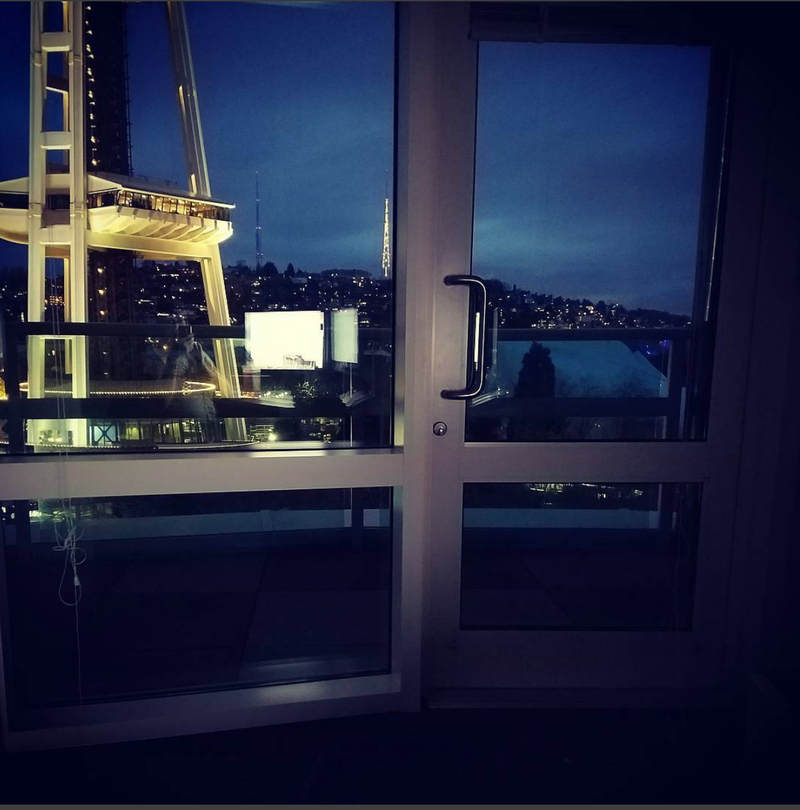
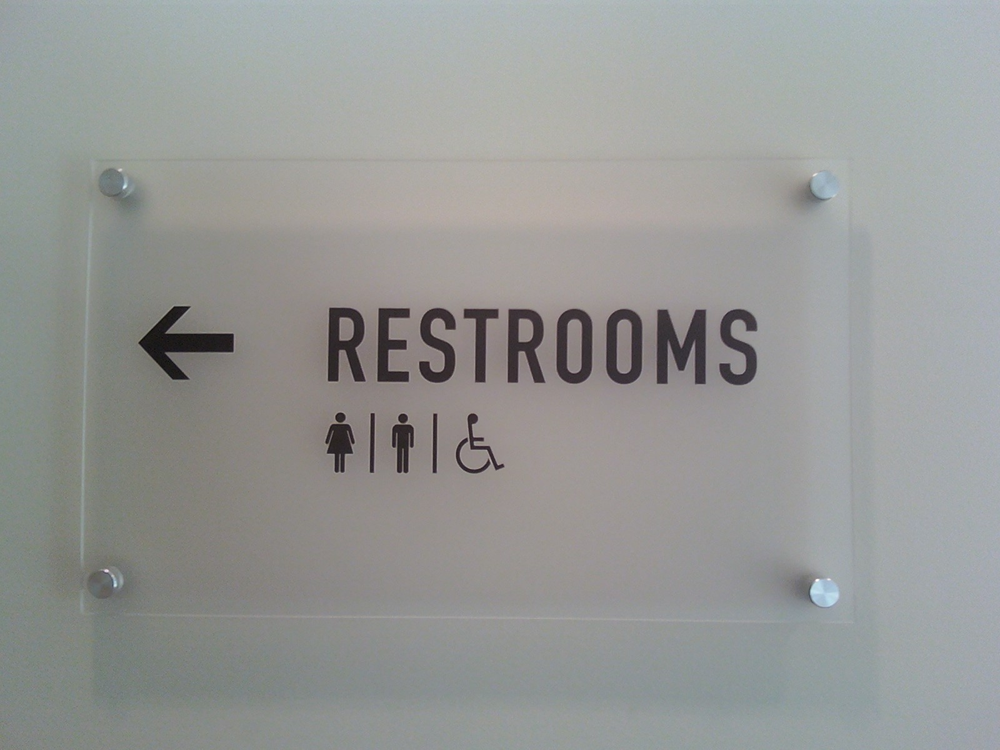

Scientific studies have shown over and over again that some types of background noise, like those found in an open plan office, can decrease your concentration, which makes it harder for you to process and memorize information. Interruptions by colleagues and constant noise can also cause you stress, resulting in high blood pressure and other unpleasant symptoms. As a result, people are less satisfied with their jobs and experience decreased motivation, leading to a steep decrease in creativity, collaboration, productivity, and an increase in sick leave.
Well here at the Rubber Room, we don’t have any of that! Life working in the Rubber Room is utopia!
Here are some reasons why The Rubber Room is the best place to work:
- The View - Best view for a peaceful environment
- Super Quiet - less people; less chatter
- Unique Space - No bathroom; no disruptions
The View
The View is ABC Daytime's morning chatfest, featuring Whoopi Goldberg, Joy Behar, Paula Faris, Sara Haines, Sunny Hostin and Meghan McCain discussing the most exciting events of the day. Hot topics in the news, the best experts in their field, celebrity interviews and general entertainment are all part of The View, now in its 21st season on ABC.
Super Quiet

"Loud and talkative coworkers can be one of the most annoying distractions on earth — and, unfortunately, they're pretty common in today's workplace," says Lynn Taylor, a national workplace expert and the author of "Tame Your Terrible Office Tyrant: How to Manage Childish Boss Behavior and Thrive in Your Job."
Unique Space

When you gotta go, you gotta go.
This golden rule of biology, unfortunately, is not always observed by the small-minded managers who run many American workplaces. You’d think that access to a bathroom, and to a place to grab a sustaining bite during a long day, would be a no-brainer.